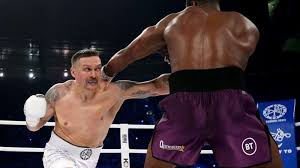

Сторінка №2
Home
Profile
Contact
Олександр Усик – український боксер, який завоював титул абсолютного чемпіона у важкій вазі, а згодом перейшов у суперважку вагу. Він відомий своєю технічною майстерністю, швидкістю та універсальністю в рингу, володіє титулами WBA, WBO, IBF і IBO в суперважкій вазі.
Тайсон Ф’юрі – британський боксер, який вважається одним з найкращих бійців сучасності. Він двічі завойовував титул чемпіона світу у суперважкій вазі і є володарем пояса WBC. Відомий своїм неймовірним ростом, майстерним захистом і психологічною стійкістю, Ф’юрі також прославився харизматичною особистістю.

First slide label
Some representative placeholder content for the first slide.
Second slide label
Some representative placeholder content for the second slide.

Third slide label
Some representative placeholder content for the third slide.
Назва картки
Різні стилі боксу, такі як "панчер", "технарь" або "контрударник", демонструють різноманітність підходів у поєдинках, що робить цей спорт ще цікавішим.
Читати далі
Це корпус гармошки першого елемента. Для боксерів тренування включають не тільки удари, але й кардіо, силові вправи та розтяжку для підтримки загальної фізичної форми.
Олімпійський бокс вважається вершиною аматорського спорту, де боксери змагаються за престижні медалі на міжнародному рівні.
Бокс формує ментальну стійкість, адже перемога залежить не тільки від фізичної підготовки, але й від здатності тримати удар і приймати швидкі рішення.
Це корпус гармошки другого предмета. Відомі чемпіони боксу, такі як Мухаммед Алі та Майк Тайсон, стали легендами завдяки своїм унікальним стилям та непереможному духу.
Бокс має дві основні дисципліни: аматорський та професійний. Аматорський більше орієнтований на техніку, тоді як у професійному важливіші сила й витривалість.
Бокс — це бойове мистецтво, яке розвиває силу, швидкість і витривалість. Він вимагає від спортсмена високої техніки і концентрації.